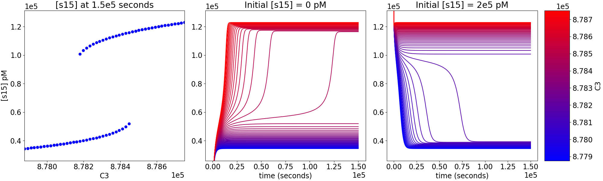

Post-processing for Mass Conservation Approach¶
In this section we describe the general process that should be followed if one would like to simulate the ODE system or conduct stability analysis of those reaction networks that produce bistability as determined by the mass conservation approach.
Storing Important Information¶
Given the act of performing the numerical optimization and continuation routines can take a significant amount of time for highly complex networks, we will describe how to store the necessary information needed to simulate the ODEs. To complete this process one will need to install dill, a Python library that extends Python’s pickle module for serializing and de-serializing Python objects. A simple way to do this is by using pip:
$ pip install dill
Using dill and Numpy, we can now save the parameter sets produced by optimization and the variables and values constructed by continuation that will be necessary when simulating the ODE system of the network. This is done as follows:
import crnt4sbml
import numpy
import sympy
import dill
network = crnt4sbml.CRNT("sbml_files/Fig1Ci.xml")
opt = network.get_mass_conservation_approach()
bounds, concentration_bounds = opt.get_optimization_bounds()
params_for_global_min, obj_fun_val_for_params = opt.run_optimization(bounds=bounds,
concentration_bounds=concentration_bounds)
numpy.save('params.npy', params_for_global_min)
multistable_param_ind, plot_specifications = opt.run_greedy_continuity_analysis(species="s15",
parameters=params_for_global_min,
auto_parameters={'PrincipalContinuationParameter': 'C3'})
odes = network.get_c_graph().get_ode_system()
sympy_reactions = [sympy.Symbol(i, positive=True) for i in network.get_c_graph().get_reactions()]
sympy_species = [sympy.Symbol(i, positive=True) for i in network.get_c_graph().get_species()]
concentration_funs = opt.get_concentration_funs()
BT_matrix = network.get_c_graph().get_b()
important_variables = [odes, sympy_reactions, sympy_species, concentration_funs, BT_matrix, multistable_param_ind,
plot_specifications]
dill.settings['recurse'] = True # allows us to pickle the lambdified functions
with open("important_variables.dill", 'wb') as f:
dill.dump(important_variables, f)
Once this code is ran, one will obtain the files “params.npy” and “important_variables.dill”. Here, “params.npy” is a special numpy file that holds the array of decision vectors produced by the optimization routine. The file “important_variables.dill” is a dill file that contains the rest of the information necessary to simulate the ODE system.
Importing Important Information¶
Once the section above is completed, one can then import the information in the files params.npy and important_variables.dill into a new Python session by creating the following script:
import dill
import sympy
import numpy
with open("important_variables.dill", 'rb') as f:
out = dill.load(f)
params_for_global_min = numpy.load('params.npy')
For the remaining subsections we will be using the files params.npy and
important_variables.dill to demonstrate how one can create nice
looking plots that depict the simulation of the ODE system. For the full script of this section and the following sections
please review stability_analysis.py.
Constructing necessary variables for ODE simulation¶
Using the information obtained by the import of the files params.npy and important_variables.dill we will now construct the function used by scipy.integrate.odeint to compute the derivative of our species’ concentrations at a particular time t. This is done below by creating the function “f”.
# getting the ODE system
odes = out[0]
# construct sympy form of reactions and species
sympy_reactions = out[1]
sympy_species = out[2]
# creating the input for each ode lambda function
lambda_inputs = sympy_reactions + sympy_species
# creating a lambda function for each ODE to make evaluating them simpler
ode_lambda_functions = []
for i in range(len(odes)):
ode_lambda_functions += [sympy.utilities.lambdify(lambda_inputs, odes[i])]
# first index of a species in input_vals
start_index = len(sympy_reactions)
# function to compute the derivative of y at t
def f(y, t, inputs, ode_lambda_func, start_ind):
# setting species concentrations
inputs[start_ind:] = y
# the model equations
ode_vals = []
for i in ode_lambda_func:
ode_vals.append(i(*tuple(inputs)))
return ode_vals
Assigning the values for ODE simulation¶
In this section we now define particular values that we want to use to perform the ode simulation. In this instance we use the decision vector values given by the third element of params_for_global_min.
# setting the decision vector values that define the ODE simulation
decision_vector_values = params_for_global_min[2]
# choosing the plot specifications corresponding to the decision vector
plot_specs = out[6][0]
# setting time grid for ODE simulation
final_time = 150000
t = numpy.linspace(0.0, final_time, 10000)
# setting initial species concentration for upper branch creation
s15_init = 2.0e5
# getting species' concetrations for a specific parameter set
species_concentrations = []
for i in out[3]:
species_concentrations.append(i(*tuple(decision_vector_values)))
# getting constant values corresponding to the conservation laws
conservation_values = out[4]*sympy.Matrix([species_concentrations]).T
# filling in the values for the reaction rates using optimization values
input_vals = numpy.zeros(len(lambda_inputs))
for i in range(len(sympy_reactions)):
input_vals[i] = decision_vector_values[i]
Creating subplots to represent the ODE simulation graphically¶
{kind=link}
Our goal in this section is to create the matplotlib subplot given above.
Setting up the format of the subplots¶
# C3 values to vary in ode solution
C3_vec = numpy.linspace(plot_specs[0][0], plot_specs[0][1])
C3_min = min(C3_vec)
C3_max = max(C3_vec)
C1 = conservation_values[0]
C2 = conservation_values[1]
# constructing format for plots
fig = plt.figure(constrained_layout=True, figsize=(20, 6))
plt.rcParams.update({'font.size': 17})
spec = matplotlib.gridspec.GridSpec(ncols=3, nrows=1, figure=fig, width_ratios=[3.3, 3.3, 3.1], height_ratios=[1])
# setting up a colormap that's a simple transition
mymap = matplotlib.colors.LinearSegmentedColormap.from_list('mycolors', ['blue', 'red'])
# creating a colorbar that varies from C3_min to C3_max
CS3 = plt.cm.ScalarMappable(cmap=mymap, norm=plt.Normalize(vmin=C3_min, vmax=C3_max))
Creating the middle subplot¶
Here we construct the middle subplot which represents how the concentration of species s15 evolves over time for different values of the conservation law constant C3. In this particular simulation we are starting with an initial species concentration of 0pM for species s15. This will allow use to obtain the lower branch of the bistability plot.
fig.add_subplot(spec[0, 1])
steady_state_vals1 = numpy.zeros(len(C3_vec))
for i in range(len(C3_vec)):
y0 = [C3_vec[i], C2, 0.0, 0.0, C1, 0.0, 0.0]
soln1 = scipy.integrate.odeint(f, y0, t, args=(input_vals, ode_lambda_functions, start_index))
s15_sol = soln1[:, 6]
steady_state_vals1[i] = soln1[-1, 6]
r = (C3_vec[i] - C3_min)/(C3_max - C3_min)
plt.plot(t, s15_sol, color=(r, 0, 1-r))
plt.xlabel("time (seconds)")
plt.ylim(plot_specs[1])
plt.ticklabel_format(axis='both', style='sci', scilimits=(-2, 2))
plt.title("Initial [s15] = 0 pM")
Creating the rightmost subplot¶
In this section we are again simulating the ODE system and tracking the concentration of s15 over time for different C3 values, however, we are now setting s15 = 2e5pM as the initial species concentration. This will allow the simulation to obtain values on the upper branch of the bistability plot. Note here that we are letting the initial value of species s1 = C3 - 2*s15_init. This value is chosen because it allows the conservation laws to be satisfied now that we have set the intial s15 to a nonzero value. The specific equation of s1 can be found by consulting the third conservation law.
fig.add_subplot(spec[0, 2])
steady_state_vals2 = numpy.zeros(len(C3_vec))
for i in range(len(C3_vec)):
y0 = [C3_vec[i]-2*s15_init, C2, 0.0, 0.0, C1, 0.0, s15_init]
soln1 = scipy.integrate.odeint(f, y0, t, args=(input_vals, ode_lambda_functions, start_index))
s15_sol = soln1[:, 6]
steady_state_vals2[i] = soln1[-1, 6]
r = (C3_vec[i] - C3_min)/(C3_max - C3_min)
plt.plot(t, s15_sol, color=(r, 0, 1-r))
plt.xlabel("time (seconds)")
plt.ylim(plot_specs[1])
plt.ticklabel_format(axis='both', style='sci', scilimits=(-2, 2))
plt.title("Initial [s15] = " + numpy.format_float_scientific(s15_init, exp_digits=0, trim='-').replace('+', '') + " pM")
clb = plt.colorbar(CS3)
clb.set_label("C3")
clb.formatter.set_powerlimits((2, 2))
clb.ax.ticklabel_format(axis='both', style='sci', scilimits=(-2, 2))
clb.update_ticks()
Creating the leftmost subplot¶
In the leftmost subplot we now plot the concentration values of s15 at the final time considered in the ODE simulations above for the varying C3 values. This produces a bistability plot that nicely shows how different C3 values and initial s15 concentration values will affect the stability of the ODE system. Note that this bistability plot produced mirrors the bistability plot provided by the greedy_continuity_analysis and AUTO.
fig.add_subplot(spec[0, 0])
plt.plot(C3_vec, steady_state_vals1, 'bo')
plt.plot(C3_vec, steady_state_vals2, 'bo')
plt.xlabel("C3")
plt.ylabel("[s15] pM")
plt.xlim(plot_specs[0])
plt.ylim(plot_specs[1])
plt.ticklabel_format(axis='both', style='sci', scilimits=(-2, 2))
plt.title("[s15] at " + numpy.format_float_scientific(final_time, exp_digits=0, trim='-').replace('+', '') + " seconds")
One can then save and close the subplot created by adding the following to the script:
plt.savefig('bistability_of_ODEs.png')
plt.close(fig)